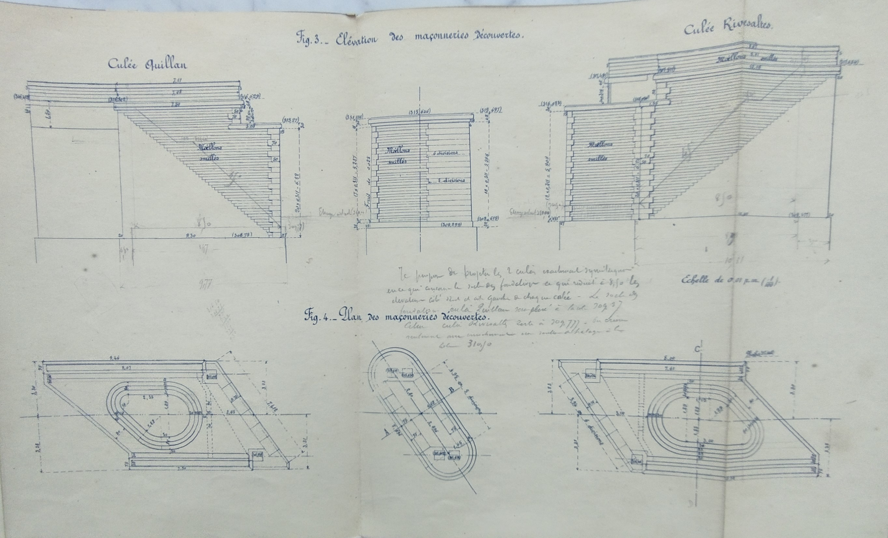
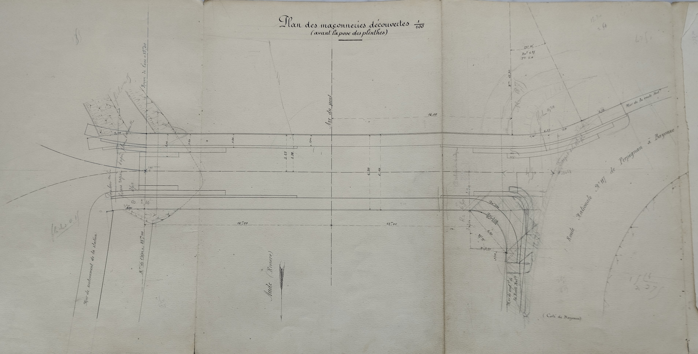
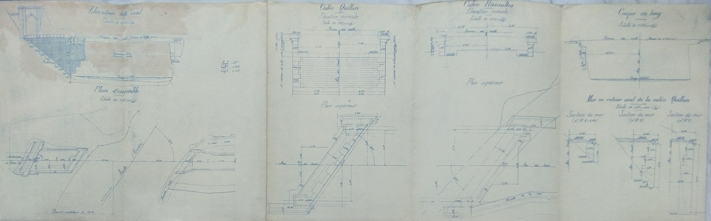
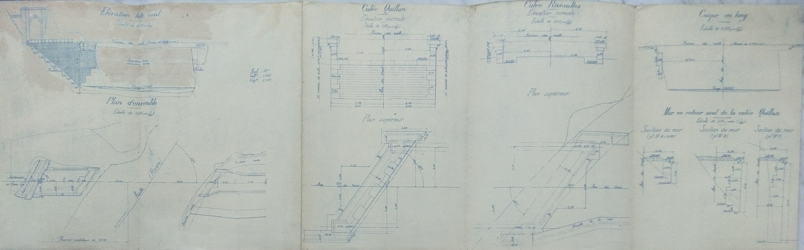
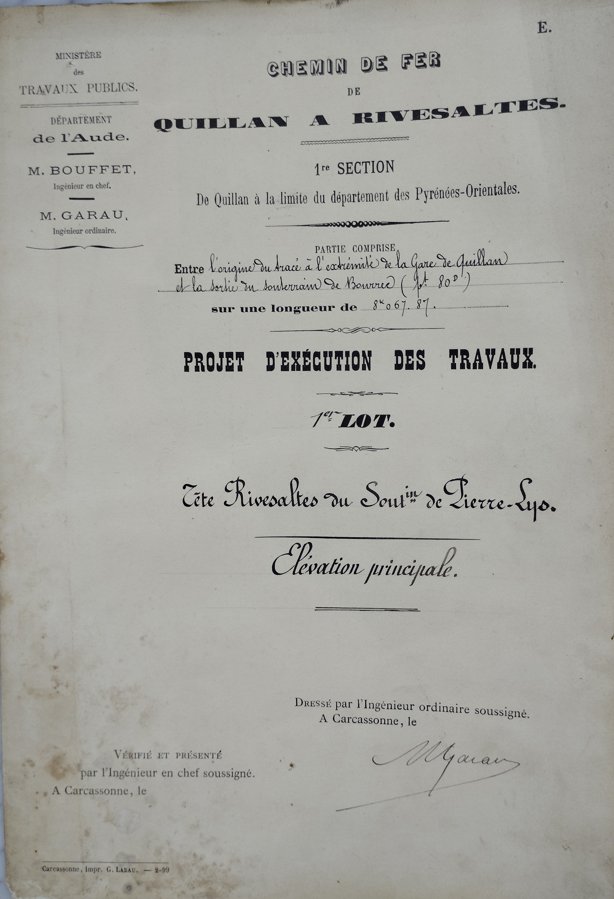
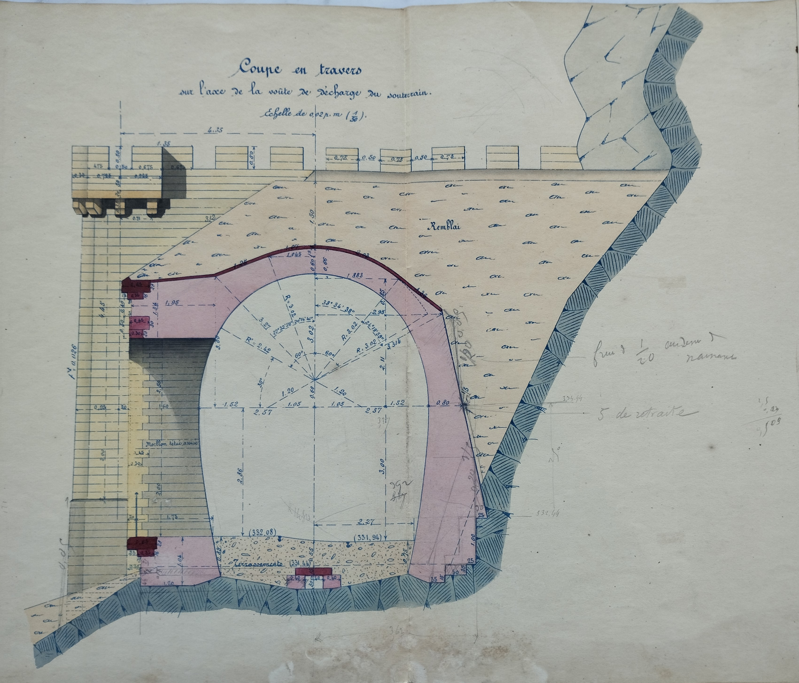
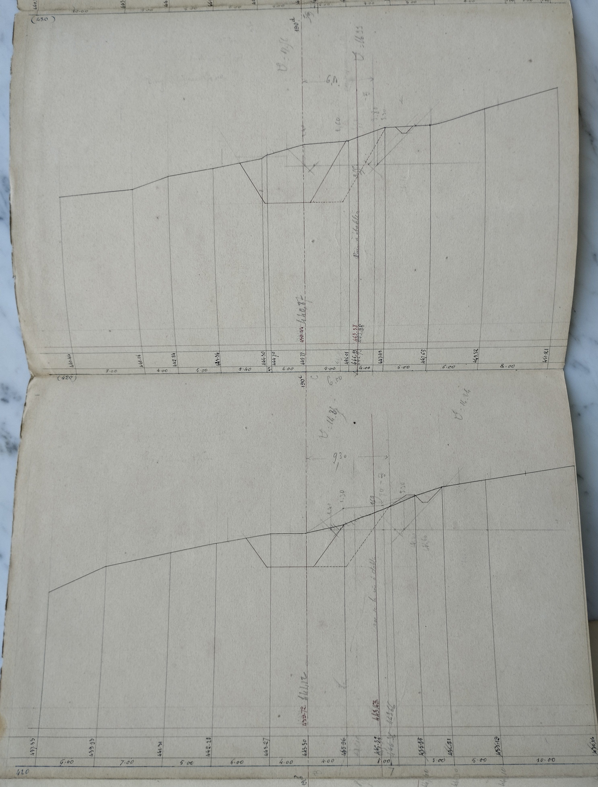

Saint Martin Lys - Voie ferrée Quillan / Rivesaltes
- Lot 1 -
plans complémentaires post attribution du lot
Pour alléger la page sur l'historique de voie ferrée, je crée cette annexe avec les informations collectées aux archives départementales de Carcassonne sur les projets d'ouvrages du lot 1 au 25 juillet 1887
18 octobre 1900 - Ouvrage 14 - blindage de la culée Quillan (et autres blindages de culées)


Plan du Pont de Belvianes sur l'Aude

Plan du Pont de la station de Saint Martin Lys

Ouvrage n°22 - Plans du Pont sur l'Aude à l'entrée du tunnel de la Pierre-Lys (coté St Martin)
 


Détournement de l'Aude dans la vallée de St Martin - Avant le tunnel de la Pierre-lys
Souterrain de la Pierre-Lys - tête Rivesaltes - Elévation principale

Souterrain de la Pierre-Lys - 3° feuille - Elevations et coupes
Cette feuille est déjà présente dans les plans du 22 novembre 1894, les corrections apportées directement sur le plan de 1894 sont reportés sur le plan ci-dessous comme informations imprimées - avec une dimention finale du lot très légèrement réduite. De nouvelles anotations apparaissent.
Souterrain de la Pierre-Lys - Aqueduc de 0,60 m d'ouverture à construire sous le radier du souterrain au point kilométrique 3k939,50
Souterrain de la Pierre-Lys - ouvertures au mileu du souterrain
Souterrain de la Pierre-Lys - tête Quillan - Réfection - Plans, coupe et élévation

Souterrain de la Pierre-Lys - abords de la tête Quillan

03/12/1897 - Souterrain de la Pierre-Lys - point kilométrique 4k369,40 - réparations
22/01/1900 Souterrain de la Pierre-Lys - tête Quillan - Maçonnerie de moellons smillés formant le parement du soubassement du pilastre
Ouvrage n°19 non daté (peut être plus ancien, 1888?) pont de Belvianes juste avant le tunnel de la Pierre-Lys
Eboulement dans souterrain au 6k 668 - Plan en long entre kilomètre 6k531 et 7k128

21 mai 1897 - Bordereau des prix supplémentaires du lot 1


Commentaires
Cliquer ici pour faire un Commentaire
Retour à l'accueil historique voie ferrée